Offene Kürzel
Bestand Stalag VII A Moosburg, vom Stadtarchiv Moosburg, die Aufnahmen teils aus den Arolsen Archives. Bitte ergänzen oder korrigieren, was Sie auflösen können. Rot gerahmt ist die Stelle, um die es geht.
Die Zahlen stammen aus einer automatischen Lesung von 2.100 der 7.196 Seiten und sind nicht von Hand geprüft. Die Vermutungen sind Vermutungen. Auf den Ausschnitten ist alles unkenntlich gemacht außer dem Kürzel, seiner Spalte und dem Formularkopf.
Auf den Dokumenten
A.K. + Nummer
161 Stellen auf 38 Seiten, meist Spalte „Aufenthaltsdaten“, auch „Todesdatum“. Vor allem Freising, Oberdolling, Moosburg.
Vermutung: Arbeitskommando. Von 83 verschiedenen Nummern stehen 35 auch in der Kommando-Tabelle der Vorarbeit.
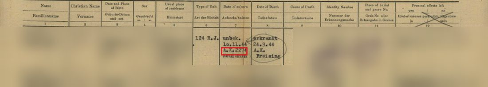
Seite 08326ed25de9
PA
129 Stellen auf 11 Seiten, nur Freising, Spalte „Art der Urkunde“.
Vermutung: Personalakte oder Personalausweis? Im Beispiel steht daneben „Ldr.“ als Aussteller.
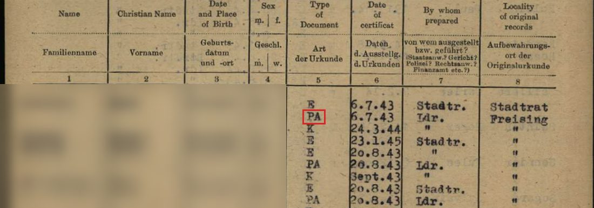
Seite 192aaf2bb280
Ldr.
116 Stellen auf 11 Seiten, nur Freising, Spalte „von wem ausgestellt“.
Vermutung: Landrat. Steht auf denselben Formularen neben „Stadtr.“.
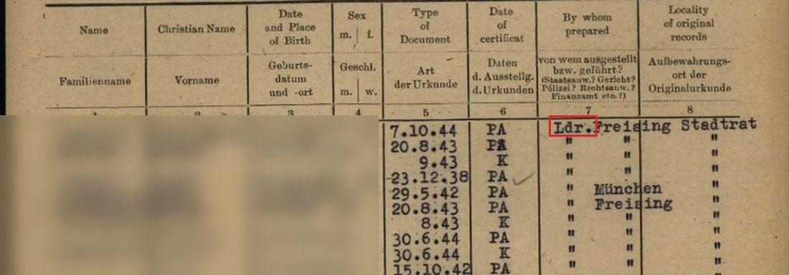
Seite fc1272beaac7
x, X
98 Stellen auf 22 Seiten, meist am Rand einer Zeile. Vor allem Trostberg, Rosenheim, Dornach. Ähnlich: Striche und Häkchen an Listenzeilen.
Keine Vermutung. Wer hat das eingetragen, und was bedeutet es?
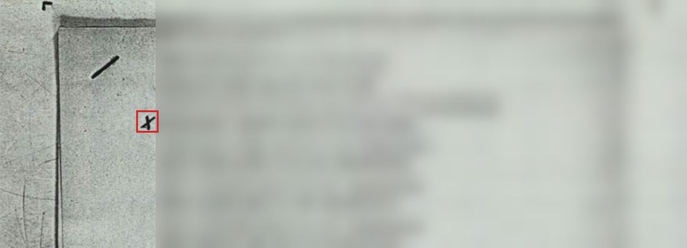
Seite 0923025ad372
E
70 Stellen auf 6 Seiten, nur Freising, Spalte „Art der Urkunde“.
Keine Vermutung. Im Beispiel steht daneben meist „Stadtr.“ als Aussteller.
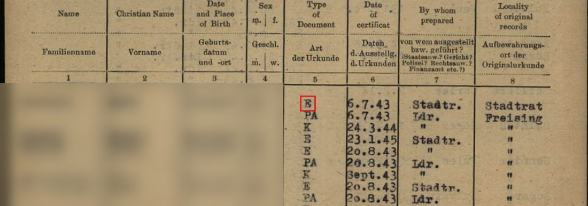
Seite 192aaf2bb280
K
49 Stellen auf 6 Seiten, nur Freising, Spalte „Art der Urkunde“.
Keine Vermutung. Im Beispiel folgt es auf „PA“, der Aussteller steht als Wiederholungszeichen.
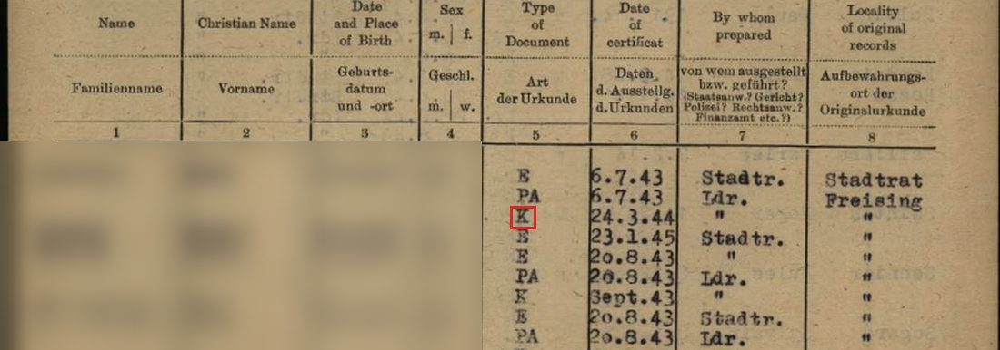
Seite 192aaf2bb280
Einheit 1275
34 Nennungen auf einer Seite, Hohenschäftlarn, als Überschrift über Kriegsgefangenen mit Erkennungsnummer.
Vermutung: Arbeitskommando? Die Nummer 1275 steht nicht in der Kommando-Tabelle.
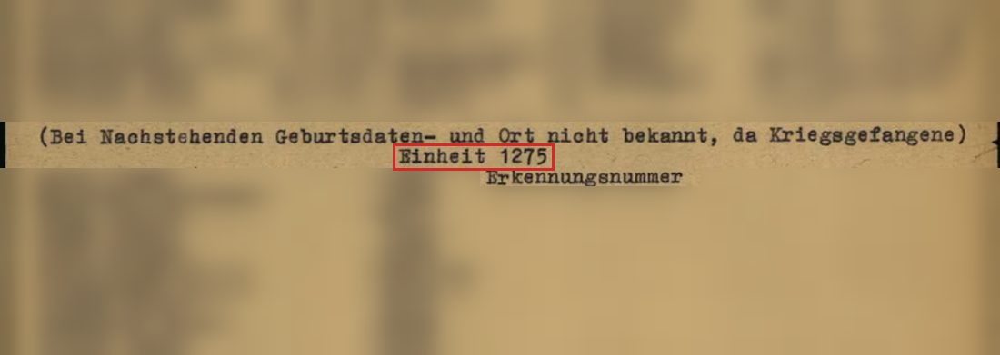
Seite 9f1ac003200e
K.A.K. 12/28
15 Nennungen auf einer Seite, Loderham, Spalte „Art der Einheit“.
Vermutung: Vielleicht Kriegsgefangenen-Arbeitskommando. Was 12/28 bedeutet, ist offen.
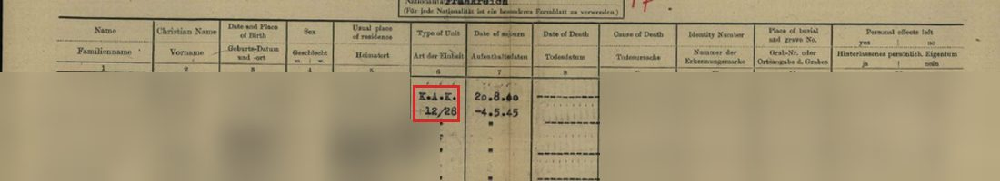
Seite 114b689144b8
Endung V
9 Stellen auf einer Seite, Moosburg, hinter der Lazarett-Krankenbuchnummer.
Keine Vermutung. Gehört das V zur Nummer, oder ist es ein Vermerk?
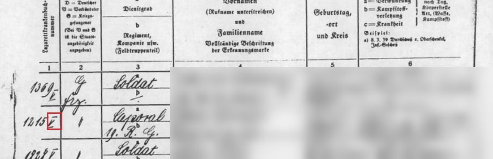
Seite cf1cffc779b3
+
6 Stellen auf 4 Seiten, unter anderem Spalte „Todesdatum“. Freising, Unterföhring, Kolbermoor.
Vermutung: Kreuz für gestorben?
Seite d17439d8bdc8
H.A.
2 Stellen auf einer Seite, Hammerau, Spalten „Beruf“ und „beschäftigt als“.
Vermutung: Hilfsarbeiter oder Hilfsarbeiterin?
Seite 93e2d80b380d
Stalag 882
Eine Stelle, Erlach, Spalte „Art der Einheit“. Die Zeilen darunter wiederholen sie.
Keine Vermutung. Welches Lager ist gemeint, oder ist es ein Lesefehler?
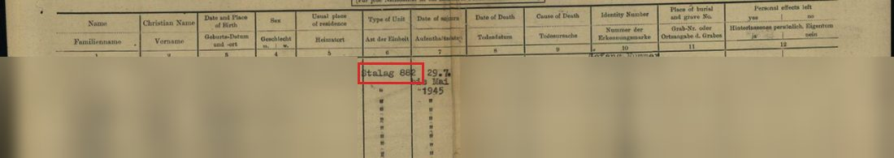
Seite c51de172e754
Nur in den Dateinamen
Diese Kürzel stammen aus der Bearbeitung und stehen nicht auf dem Blatt. Das Bild zeigt eine Seite aus einer solchen Datei. Gezählt ist hier der ganze Bestand.
Pol
485 Dateien, vor allem München und Fürstenfeldbruck. Bisher nur 3 gelesen.
Vermutung: Polizei oder Polen? Die gelesenen Seiten nennen keine ausstellende Stelle.
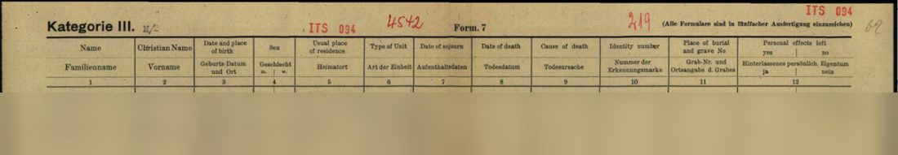
Seite 1b838dec93b5
RS, VS
424 und 391 Dateien, vor allem Penzberg, München, Töging. Meist Karten.
Vermutung: Rückseite und Vorderseite.
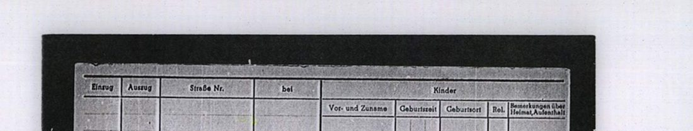
Seite 0312fc6b9ce1
LR
160 Dateien, vor allem Laufen, Weilheim, München.
Vermutung: Landrat. 59 von 78 gelesenen Seiten nennen ihn als ausstellende Stelle.
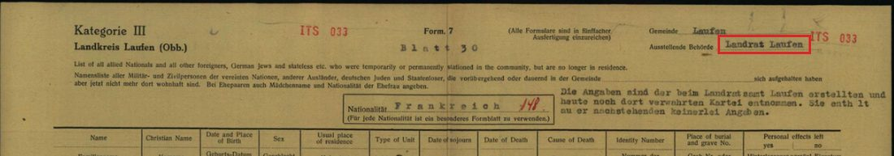
Seite 0125cf55f7cc
Endung x
143 Dateien, fast immer als „ITS 123x“. Vor allem Freising, München, Erding. Die 69 gelesenen sind alle Listen, nur 5 Dateien haben einen Zwilling ohne x.
Keine Vermutung. Der Kopf der Seiten unterscheidet sich in sechs Stichproben nicht von Dateien ohne x.
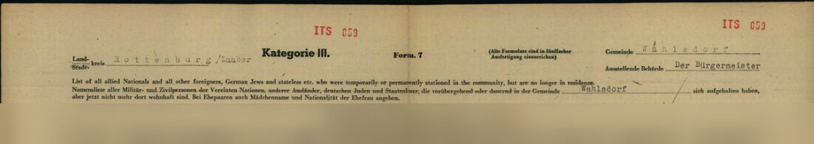
Seite 4df32d124d5e
KH
142 Dateien, vor allem Waging, Aichach, Neuburg.
Vermutung: Krankenhaus. 41 von 54 gelesenen Seiten nennen eines.
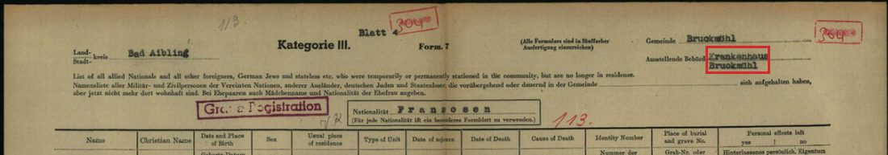
Seite 01c0caa8d8e6
RB
93 Dateien, vor allem München, Mühldorf, Neuaubing.
Vermutung: Reichsbahn. 11 von 15 gelesenen Seiten nennen sie.
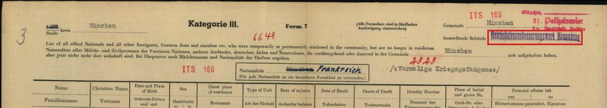
Seite 10db235004cc
KG
51 Dateien, vor allem Freising, Plansee, Lampoding.
Vermutung: Kriegsgefangene, etwa Kriegsgefangenenlazarett. 43 von 45 gelesenen Seiten nennen das Krankenblattlager München.
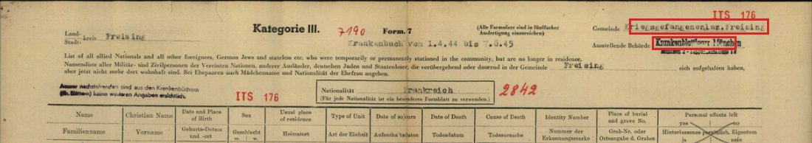
Seite 0829b5ab134b
AA
46 Dateien, vor allem Murnau, Erding, Mühldorf.
Vermutung: Arbeitsamt. 15 von 16 gelesenen Seiten nennen eines.
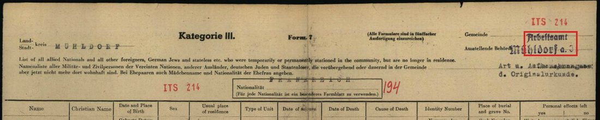
Seite 16b92794a450
LA
31 Dateien.
Vermutung: Landshut, als Kfz-Kennzeichen. Die Seiten nennen Stellen in Landshut, und 114 Personen stehen auch in Dateien mit dem ausgeschriebenen Ortsnamen.
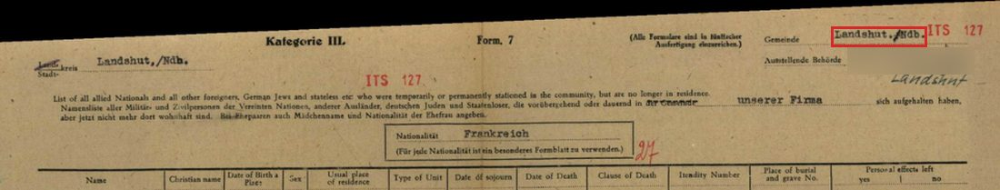
Seite 1cd4a6c2e8fb
AK
25 Dateien, vor allem Obing, Langenmoosen, Hohenried. Bisher 5 gelesen, mit ganz verschiedenen Stellen.
Vermutung: Arbeitskommando?
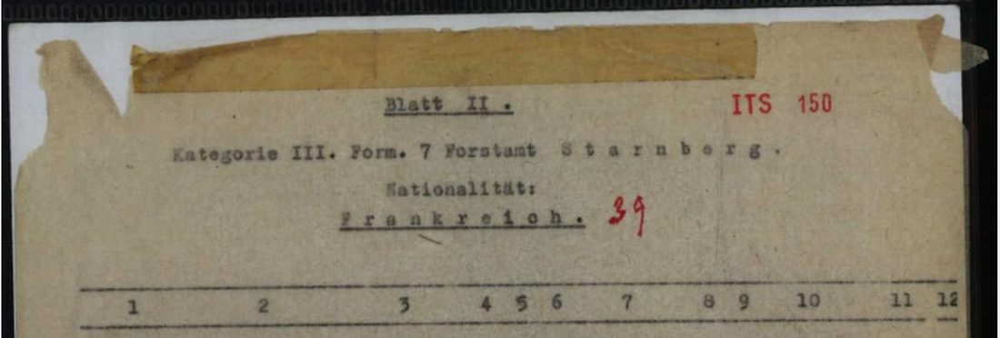
Seite 24b855e2ac4c
STA
22 Dateien, vor allem München, Berg, Unering.
Vermutung: Starnberg, als Kfz-Kennzeichen. 6 von 7 gelesenen Seiten nennen den Kreis.
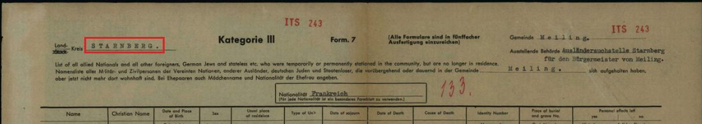
Seite 0f0e284c6c5f
AO
11 Dateien, vor allem Stammham, Burgkirchen, Mehring.
Vermutung: Altötting, als Kfz-Kennzeichen.
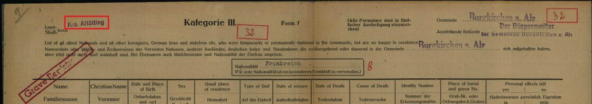
Seite 5e8628de9109
RA
11 Dateien, alle München. Noch keine gelesen.
Vermutung: Rechtsanwalt. Das Beispiel trägt den Stempel eines Rechtsanwalts, weitere Seiten sind noch nicht gelesen.
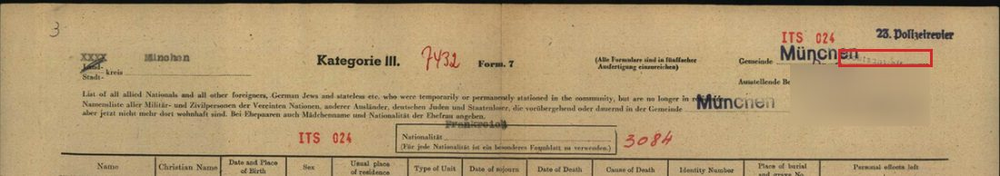
Seite ce2444aaa451
ZA
10 Dateien, vor allem Peißenberg, Friedberg, Tutzing.
Vermutung: Zahnarzt. Alle 3 gelesenen Seiten nennen einen Zahnarzt oder Dentisten.
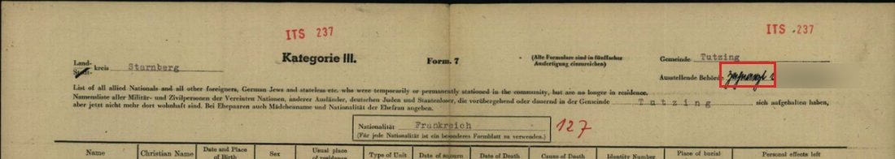
Seite 24719e931744
FFB, WM, FS, AIB, RO, WOF, PAN, TS …
Je 14 bis 41 Dateien.
Vermutung: Kfz-Kennzeichen der Landkreise: Fürstenfeldbruck, Weilheim, Freising, Bad Aibling, Rosenheim, Wolfratshausen, Pfarrkirchen, Traunstein. Bitte einmal bestätigen.
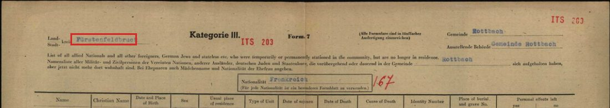
Seite d72827a2a3ed